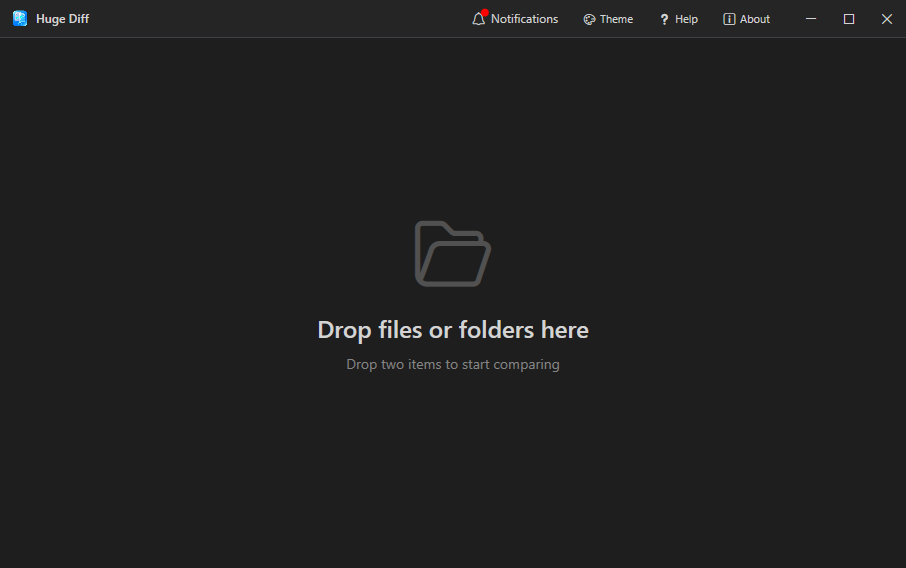
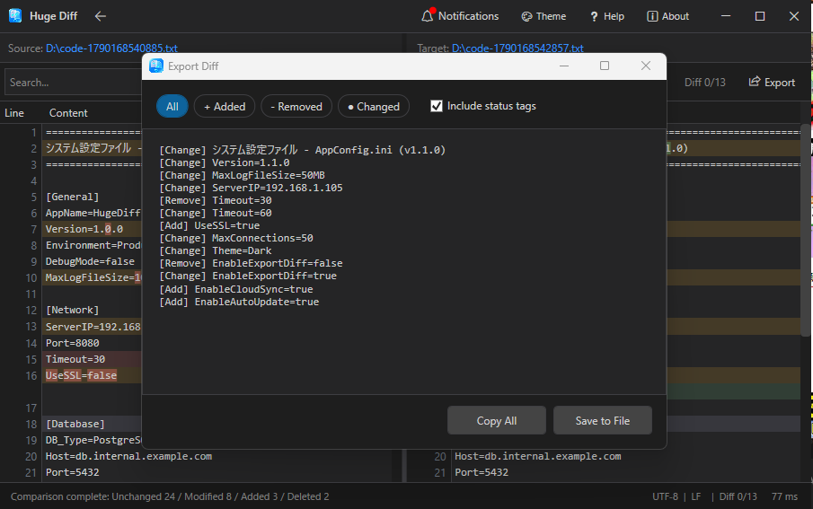

1. Getting Started (Drag & Drop)
Launch HugeDiff and drag & drop two files or two folders directly into the window. The comparison process will start automatically.

Pro Tip: You can also drop items one by one. Once you drop the first item, the screen will prompt you to drop the second one.
2. Comparing Folders (Directory Diff)
When you compare folders, HugeDiff displays a list of the files inside. Added, removed, and modified files are color-coded so you can spot them at a glance.

Pro Tip: Simply double-click a modified file (yellow/orange icon) to instantly jump into the Text Diff view for that specific file.
3. Comparing File Contents (Text Diff)
In the Text Diff view, the screen is split side-by-side with changed text highlighted inline. Thanks to UI virtualization, even massive log files with over 1 million lines will scroll smoothly with zero freezes.

Useful Keyboard Shortcuts:
4. Exporting Results (Diff Export)
Click the "Export" button in the top right corner of the Text Diff view to extract and save your comparison results.

- Filter your export: Extract exactly what you need by filtering conditions (e.g., "Export added lines only" or "Export modified lines only").
- Export options: Copy the extracted data directly to your clipboard, or save it as a text file (.txt). Perfect for sharing diffs during code reviews.
5. Settings & Notifications
Customize your HugeDiff environment using the icons in the top right corner.
- Theme Switching: Switch between "Dark Mode" to reduce eye strain and the standard "Light Mode".
- Language Settings: Toggle the UI language natively between "English" and "Japanese".
- Update Notifications: Receive the latest release notes and important announcements (make sure to check if a red notification badge appears).